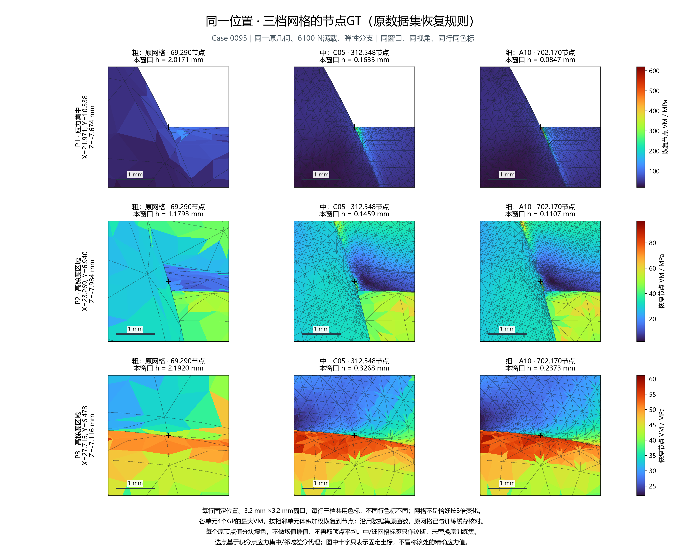
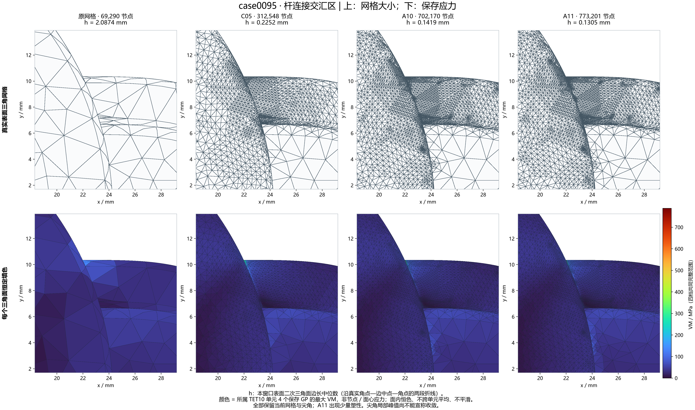
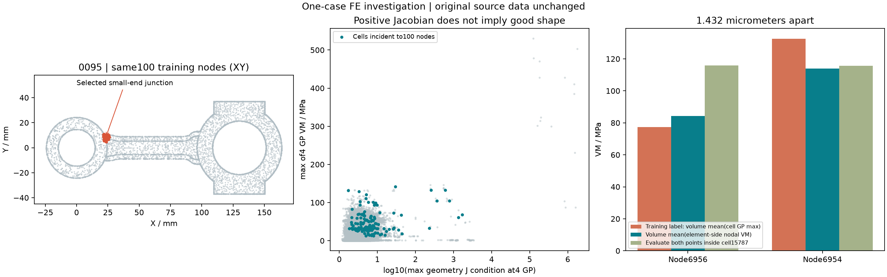
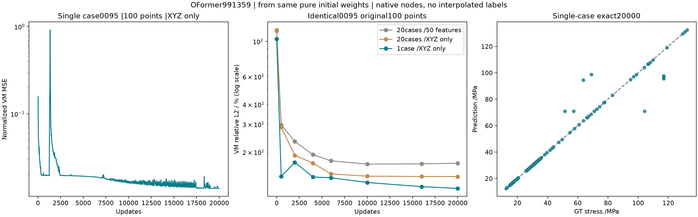
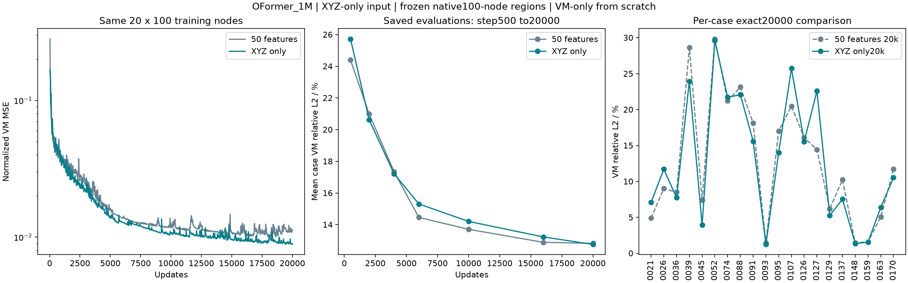

M03 局部训练
Connecting rod · OFormer_1M · 0095单case ×100原节点 · XYZ→应力VM · 从头20000步
当前主图：0095单例XYZ拟合，20000步。100点整体VM相对L2为11.808%，逐点百分比误差平均2.515%；87/100点低于1%，仍有少数点未拟合好。区域外GT与预测均灰色占位。下方保留20例、50维输入及全局训练对照和全部比较边界。
同一位置 × 三档网格 · 3×3对照
同一case0095、原几何和6100 N满载，三档均处于弹性分支。每行是固定物理位置的3.2×3.2 mm窗口；三列分别为原网格（69290节点）、C05（312548节点）、A10（702170节点）。十字定位、视角和比例尺固定，同行共用色标。三档为已有粗/中/细结果，不是尺寸恰好相差3倍。

节点GT：沿用原数据集函数，将单元4个GP的最大VM按相邻单元体积加权恢复到节点，再按原节点值分块填色。原网格恢复值已与训练缓存核对；中/细网格标签仅作诊断，未替换原训练数据。积分点应力版本则每个原表面三角面取所属单元4GP最大VM恒色显示，两种量分开展示。
三个位置的坐标与选择依据
选点基于A10连接区的应力集中及邻域差分代理，限制在小端下侧表面；不是按节点编号跨网格匹配。图中十字只标位置，不冒称十字处的精确应力。
P1：(21.971067, 10.338367, -7.673635) mm；连接区A10可见表面最大单元GP峰值。
P2：(23.269026, 6.939851, -7.983973) mm；与已选点XY距离>=2.3mm的高梯度代理点。
P3：(27.714931, 6.472817, -7.116451) mm；与已选点XY距离>=2.3mm的高梯度代理点。
FEM · 不同网格分割与求解结果
case0095原几何、6100 N满载：原网格、C05、A10和完整A11并排。复用FEM对话已有保存结果，没有重新求解。切换整杆、连接区与尖角放大；点击图片可打开完整分辨率。

| 原网格 | 原始保存解 | 69290 | 41162 | 2.087370 | 530.414904 | 0.065786464 | 0 |
| C05 | 弹性分支 | 312548 | 215000 | 0.225235 | 530.412807 | 0.065844461 | 0 |
| A10 | 弹性分支 | 702170 | 495397 | 0.141864 | 635.766601 | 0.065850380 | 0 |
| A11 | 完整 J2 | 773201 | 546217 | 0.130497 | 787.625793 | 0.065850752 | 6.18190221e-06 |
材料分支不同：C05、A10为弹性分支；A11为完整J2弹塑性，最大PEEQ约6.18×10⁻⁶，不能把所有差异归因于网格细化。A12尚无完整满载结果，暂不列入。区域应力仍需后续完整J2细化确认，尖角峰值不能宣称收敛。


0095 · 原节点点云对比
默认显示单例XYZ拟合的20000步结果：GT / 20例XYZ预测 / 单例XYZ预测 / 两个误差窗。可切换之前的20例与全局训练对照；各图保留自己的原始结果。
沿用之前的原节点点云、同步视角和点大小：点直径0.24 mm，随放大而变大。默认无面、无插值；只有100个训练节点显示数值，其他节点统一灰色。GT与预测共用色标，两个误差窗共用误差色标；可按原节点编号读取GT和预测。
单case核对：有限元与节点标签
仅检查0095原拉伸case。原节点/单元ID、载荷及训练缓存一致，独立重算原4积分点应力吻合；未发现索引错位或显著本构公式错误。
当前“GT”是后处理节点标签：每个TET10取4积分点VM最大值，再对相邻单元按体积平均到节点。它不是节点位置的直接应力；1%模型拟合误差也不是有限元相对真实解的误差。原几何、解和标签均保持原样。
6956与6954距离仅0.001432mm，属于不同边的中点，共享薄单元15787。在该单元内部直接求值只差约0.21MPa；当前标签相差55.17MPa，与它们参与平均的相邻单元和权重差异有关。
| 6956 | 77.3030 | 115.9327 | 0.06345% |
| 6954 | 132.4736 | 115.7226 | 49.8744% |

还做了同一几何610N（10%载荷）的两次独立求解，只改变体积积分degree2/6：U相对差0.0118%，同4物理积分点VM相对差2.7804%，所选100点标签差0.5810%。原“收敛通过”没有证明这100个节点标签逐点收敛；薄单元、积分和应力恢复仍需专门验证。
单例拟合：0095，只输入XYZ的100点
从同一纯未训练初值开始，991359总参数OFormer；只读取0095连接处固定的100个原节点。输入100×3（XYZ），监督输出100×1（应力VM），无CAD、载荷、材料或case ID。20000步已完成，耗时6.70分钟。
单例的XYZ均值/标准差和VM尺度只从这100点计算；20例组使用2000点统一统计。因此比较同时改变了训练范围及归一化，不据此单独归因。网络内部47维固定补零以保留原架构和初值，5123个输入权重无梯度；保留的U输出头没有监督，不作为位移结果展示。
默认显示相同20000步，也可切换其他保存步数。原节点点云，不插值；区域外灰色。GT与预测共用色标，逐点相对误差为 |GT−PRED|/|GT|；可输入原节点ID查询。
精确步数结果（只计算0095这100点）
| 0 | 116.8321% | 118.2354% | 103.6934% | 60.5498 |
| 500 | 29.7829% | 28.7563% | 14.0592% | 8.2096 |
| 2000 | 23.3798% | 19.0889% | 17.2459% | 10.0704 |
| 4000 | 19.2839% | 17.0554% | 13.9445% | 8.1426 |
| 6000 | 17.6302% | 14.5834% | 13.7799% | 8.0465 |
| 10000 | 16.8075% | 14.1070% | 12.8649% | 7.5122 |
| 16000 | 16.8780% | 14.0399% | 12.1140% | 7.0738 |
| 20000 | 17.0107% | 14.0288% | 11.8084% | 6.8953 |
逐点误差与残差最大的5点
逐点相对误差平均2.515%，最大48.701%；87/100点小于1%。下列5点占总平方残差80.30%。这解释了部分指标差异，不据此断言GT有误或模型已到拟合极限。
| 4435 | 104.2893 | 70.9781 | 33.3113 | 31.941% |
| 15 | 63.6053 | 94.5819 | 30.9766 | 48.701% |
| 16 | 68.9900 | 98.7092 | 29.7192 | 43.078% |
| 457 | 117.0048 | 95.6627 | 21.3421 | 18.240% |
| 455 | 116.9547 | 96.7120 | 20.2427 | 17.308% |

新增实验：只输入XYZ，从头拟合相同100点
20个case、每例原来的100个节点、完全相同GT和未训练初值；同一OFormer结构，总参数991359。输入仅绝对XYZ毫米坐标，实际入口20×100×3；VM损失、目标尺度、学习率日程均沿用50维局部组，训练20000步。
为保留完全相同的网络和初值，网络内部将XYZ后47维固定补零；其中5123个输入权重没有梯度，不能把总参数相同称为有效参数完全相同。XYZ按2000点统一标准化，不逐case居中或除以L；旧50维组坐标先除以杆长L再标准化，因此同时改变了输入信息和坐标处理。只比较本次TRAIN拟合，不据此单独归因或声称泛化。
两组选择同一步数，默认6000，可切换20000。只读取保存预测；GT与预测共用色标、两个误差窗共用误差色标。区域外灰色，点直径0.24mm，随放大而变大；可按原节点编号查询数值。
固定步数比较（表头可排序）
每例100节点先计算 ‖PRED−GT‖₂ / ‖GT‖₂，再对20例平均；评估不更新权重。合并误差另列，非逐点百分比的平均。
| 0 | 177.7145% | 114.6665% | 117.5323% |
| 500 | 24.3938% | 25.7264% | 22.5152% |
| 2000 | 20.9862% | 20.6247% | 16.1261% |
| 4000 | 17.3557% | 17.2219% | 13.3729% |
| 6000 | 14.4583% | 15.3094% | 11.3480% |
| 10000 | 13.7083% | 14.2073% | 10.3605% |
| 16000 | 12.8885% | 13.2307% | 9.6785% |
| 20000 | 12.8220% | 12.7557% | 9.4515% |

逐case相同原节点对照（点击表头排序）
| 0021 | 6.9645% | 10.6790% | 4.8892% | 7.0783% |
| 0026 | 10.9565% | 14.6998% | 9.0346% | 11.7019% |
| 0036 | 9.0193% | 8.7488% | 8.4950% | 7.7514% |
| 0039 | 30.0918% | 26.2556% | 28.6371% | 23.9366% |
| 0045 | 10.8560% | 9.7102% | 7.3917% | 3.9326% |
| 0052 | 29.8585% | 31.8102% | 29.8350% | 29.5912% |
| 0074 | 21.2743% | 22.8025% | 21.2090% | 21.7185% |
| 0088 | 26.2839% | 24.6683% | 23.1383% | 22.0760% |
| 0091 | 20.2212% | 18.2890% | 18.1252% | 15.5937% |
| 0093 | 1.5399% | 1.4071% | 1.4405% | 1.2345% |
| 0095 | 17.6302% | 14.5834% | 17.0107% | 14.0288% |
| 0107 | 21.2926% | 28.0843% | 20.4740% | 25.7256% |
| 0126 | 17.0485% | 16.8523% | 16.1029% | 15.5488% |
| 0127 | 18.1004% | 24.3289% | 14.4263% | 22.5928% |
| 0129 | 10.8023% | 10.7583% | 6.1797% | 5.2646% |
| 0137 | 11.2969% | 10.5960% | 10.2362% | 7.5290% |
| 0148 | 1.7155% | 1.5710% | 1.4623% | 1.3474% |
| 0159 | 2.4044% | 2.4521% | 1.5699% | 1.5554% |
| 0163 | 6.6388% | 11.6329% | 5.0846% | 6.3771% |
| 0170 | 15.1710% | 16.2580% | 11.6986% | 10.5297% |
全局训练 vs 局部训练 · 完全对应的原节点
两边均为991359参数的OFormer_1M。直接读取已保存预测，没有新增NN推理。下表只计算同20例、每例完全相同的100个原节点；全局模型的整网格平均误差不混入此表。
| 全局训练 → 同100节点 | 6000 | 16.8563% |
| 局部100节点训练 | 6000 | 14.4583% |
| 局部100节点训练 | 20000 | 12.8220% |
同6000步可比较预算，但输入上下文、损失（全局U+VM / 局部仅VM）、归一化范围均不同；20000步另有更新预算差异，不据此单独归因。
展开20个case的逐例对应结果（表头可排序）
| 0021 | 8.4494% | 6.9645% | 4.8892% |
| 0026 | 9.8792% | 10.9565% | 9.0346% |
| 0036 | 13.4247% | 9.0193% | 8.4950% |
| 0039 | 28.2223% | 30.0918% | 28.6371% |
| 0045 | 11.9037% | 10.8560% | 7.3917% |
| 0052 | 35.5532% | 29.8585% | 29.8350% |
| 0074 | 21.6247% | 21.2743% | 21.2090% |
| 0088 | 28.6230% | 26.2839% | 23.1383% |
| 0091 | 26.3240% | 20.2212% | 18.1252% |
| 0093 | 2.2132% | 1.5399% | 1.4405% |
| 0095 | 20.4380% | 17.6302% | 17.0107% |
| 0107 | 26.6815% | 21.2926% | 20.4740% |
| 0126 | 17.8509% | 17.0485% | 16.1029% |
| 0127 | 22.2795% | 18.1004% | 14.4263% |
| 0129 | 17.0742% | 10.8023% | 6.1797% |
| 0137 | 14.0531% | 11.2969% | 10.2362% |
| 0148 | 2.8180% | 1.7155% | 1.4623% |
| 0159 | 3.2640% | 2.4044% | 1.5699% |
| 0163 | 8.5908% | 6.6388% | 5.0846% |
| 0170 | 17.8584% | 15.1710% | 11.6986% |
50维输入组 · 固定步数结果
20例分别计算100个选定原节点的物理VM相对L2，再取算术平均。合并相对L2将2000点整体计算，二者分开展示。点击任意表头切换排序。
| 0 | 177.7145% | 127.5592% | 43.1866 |
| 500 | 24.3938% | 22.0756% | 7.4739 |
| 2000 | 20.9862% | 17.9449% | 6.0755 |
| 4000 | 17.3557% | 13.7419% | 4.6525 |
| 6000 | 14.4583% | 11.7498% | 3.9780 |
| 8000 | 13.8686% | 11.1543% | 3.7764 |
| 10000 | 13.7083% | 11.0461% | 3.7398 |
| 12000 | 13.3555% | 10.8084% | 3.6593 |
| 16000 | 12.8885% | 10.6367% | 3.6012 |
| 20000 | 12.8220% | 10.5931% | 3.5864 |

50维输入组 · 逐case结果
所有误差仅针对各自100个训练节点；small / big表示所选连接端，未使用GT或误差排序选点。
| 0021 | small | 100 | 251.3058% | 6.9645% | 4.8892% | 1.3018 |
| 0026 | big | 100 | 89.9380% | 10.9565% | 9.0346% | 1.4611 |
| 0036 | small | 100 | 74.8957% | 9.0193% | 8.4950% | 4.2272 |
| 0039 | big | 100 | 95.3149% | 30.0918% | 28.6371% | 4.6738 |
| 0045 | small | 100 | 126.8034% | 10.8560% | 7.3917% | 2.7164 |
| 0052 | big | 100 | 172.7092% | 29.8585% | 29.8350% | 5.4495 |
| 0074 | big | 100 | 144.6063% | 21.2743% | 21.2090% | 3.9903 |
| 0088 | big | 100 | 225.9029% | 26.2839% | 23.1383% | 2.9934 |
| 0091 | big | 100 | 183.3729% | 20.2212% | 18.1252% | 2.3606 |
| 0093 | small | 100 | 83.1435% | 1.5399% | 1.4405% | 0.6340 |
| 0095 | small | 100 | 116.8321% | 17.6302% | 17.0107% | 9.9331 |
| 0107 | big | 100 | 460.5200% | 21.2926% | 20.4740% | 1.1723 |
| 0126 | big | 100 | 102.4675% | 17.0485% | 16.1029% | 3.1903 |
| 0127 | big | 100 | 656.7183% | 18.1004% | 14.4263% | 0.9008 |
| 0129 | small | 100 | 146.7753% | 10.8023% | 6.1797% | 2.9365 |
| 0137 | small | 100 | 101.7901% | 11.2969% | 10.2362% | 3.5689 |
| 0148 | small | 100 | 109.8294% | 1.7155% | 1.4623% | 0.6956 |
| 0159 | small | 100 | 104.0984% | 2.4044% | 1.5699% | 0.9390 |
| 0163 | small | 100 | 161.8640% | 6.6388% | 5.0846% | 1.6298 |
| 0170 | small | 100 | 145.4014% | 15.1710% | 11.6986% | 3.0587 |
为什么局部100点仍难以充分拟合？
目前定位到一个具体例子：0095原节点6956与6954仅相距0.001432 mm（约1.43微米），输入只有XYZ不同，其余47维相同；GT应力却相差55.17 MPa。当前预测仍十分接近，未充分学到这个陡变。这是观测到的残差来源，不足以断言1%不可达到，也未据此判定GT有误或参数容量不足。
| 6956 | 77.303 | 105.165 | 113.135 |
| 6954 | 132.474 | 105.503 | 113.805 |
2000个输入均不完全相同，未发现完全相同输入对应不同GT。误差来源的进一步因果诊断尚未完成。

展开原50维输入组的训练方法、参数、数据和下载
训练范围
复用20例纯拉伸TRAIN。按几何密度选取杆与端部连接处一片连续的100个原表面节点；不按标签或误差选点。每例只读取100×50输入，20例批处理；无全网格神经网络前向、无padding。归一化只使用所选2000点。
模型与损失
OFormer_1M，991359参数；width109、1 head、4层encoder和4层decoder。纯未训练初值，seed20261029。损失为所选2000点的归一化VM MSE；U损失权重0。区域外点不进入输入和损失。
优化与耗时
AdamW，初始学习率3e-4，warmup50，至6000步余弦衰减至1e-5；6000→20000保留同一模型、优化器、scheduler和RNG，在1e-5续训。weight decay0、梯度裁剪1、FP32无AMP；CPU 4线程。累计训练26分27秒，续训约17分23秒。
比较边界
只有局部TRAIN拟合，不代表完整应力场或泛化能力；与M01的全节点输入、U+VM损失及6000步预算不同，不称公平排名、等算力或作者基准原样复现。此前50点微调试验不计入本次结果。没有新增FE求解、物理节点或插值标签。